원자력기사 (2021-03-07 기출문제)
1과목: 원자력기초
1. 삼중수소의 양성자수, 전자수, 중성자 수 및 질량수는?
- 1, 1, 2, 3
- 1, 2, 1, 3
- 2, 1, 1, 3
- 2, 2, 2, 3
(정답률: 알수없음)

2. 210Po의 방사성 붕괴 반응에 대한 설명으로 맞는 것은?
- 붕괴하는 것은 핵력이 강한 척력을 가지기 때문이다.
- 원자핵 속의 양성자에 대한 중성자의 비율이 너무 높아 에너지 상태가 불안정하여 알파붕괴한다.
- 헬륨의 원자핵이 210Po원자핵에 의한 쿨롱 포텐셜 장벽을 투과하는 양자터널 효과를 이용하여 설명할 수 있다.
- 원자핵 속의 핵력은 양성자 간의 힘이 중성자와 양성자 간의 힘보다 작다.
(정답률: 알수없음)
3. 핵분열 생성물에 대하여 바르게 설명한 것은?
- 대표적인 핵분열 생성물인 137Cs, 60Co는 베타붕괴 직후 감마선을 방출하며 안정화 된다.
- 90Sr은 감마붕괴하여, 시간이 지남에 다라 90Y과 영속평형 상태에 놓이게 된다.
- 3H는 주로 내부피폭에 영향을 미치는 핵종이다.
- 핵분열 후 10초부터 1,000시간 사이에 핵분열 당 총 방사능은 핵분열 후 경과시간의 1.2제곱에 반비례하며 감소한다.
(정답률: 알수없음)
4. 중수소(D)-삼중수소(T) 핵융합 반응으로부터 1MW-day의 열에너지를 얻기 위해 필요한 삼중수소의 양(g)은? (단, 핵융합 반응 한번 당 발생되는 열에너지는 17.6MeV이다. )
- 약 0.10
- 약 0.15
- 약 0.20
- 약 0.25
(정답률: 알수없음)
5. 중성자 감속에 대한 다음 설명 중 옳지 않은 것은?(오류 신고가 접수된 문제입니다. 반드시 정답과 해설을 확인하시기 바랍니다.)
- 감속능은 대수적 에너지감쇠율과 거시적 흡수단면적을 곱한 값이다.
- 페르미연령이 작은 값을 가진 물질 내에서는 속중성자 누설이 적다.
- 탄소는 물보다 감속능이 크지만, 감속비는 더 작다.
- 물, 중수, 탄소 중 감속능이 가장 큰 것은 중수이다.
(정답률: 알수없음)
6. 중성자 누설과 관련된 다음 설명 중 옳지 않은 것은?
- 속중성자 비누설확률은 페르미 연령에 의해 결정된다.
- 열중성자 비누설확률은 중성자 확산거리에 의해 결정된다.
- 이론 상 무한대 원자로의 버클링은 1이다.
- 독물질이 증가하면, 열중성자 비누설확률은 증가한다.
(정답률: 알수없음)
7. 다음 중 핵분열 반응에 의하여 발생 가능한 반응 식은?
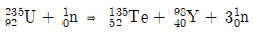
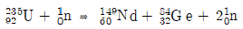
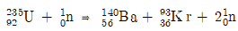
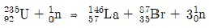
(정답률: 알수없음)
8. 다음 중 중수로에 대한 설명으로 옳지 않은 것은?
- 가동 중 핵연료를 교체할 수 있다.
- 경수로에 비해 열역학적 효율이 좋다.
- 감속재와 냉각재가 분리되어 있다.
- 경수로에 비해 삼중수소의 발생량이 많다.
(정답률: 알수없음)
9. 3.232MeV의 에너지를 가진 γ선이 전자쌍생성 반응을 일으킬 때, 발생되는 양전자(Positron)의 최대 운동에너지(MeV)는?(오류 신고가 접수된 문제입니다. 반드시 정답과 해설을 확인하시기 바랍니다.)
- 0.511
- 1.1⑤
- 1.699
- 2.21
(정답률: 알수없음)
10. 다음 중 중성자 반응에 대한 도플러 효과와 가장 관련이 적은 것은?
- 감속재온도계수
- 핵연료온도계수
- 공명이탈확률
- 자기차폐효과
(정답률: 알수없음)
11. 핵분열이 없는 매질 내에 등방 중성자 점선원이 존재할 때, 확산 방정식을 통해 계산된 중성자속에 대한 다음 설명 중 맞는 것은?
- 중성자속은 중성자 선원으로부터 거리의 제곱에 반비례한다.
- 중성자 확산계수(D)가 클수록 중성자속이 크다.
- 중성자 확산 면적(L2)은 선원으로부터 중성자가 흡수된곳까지의 직선거리의 평균에 비례한다.
- 중성자 흡수단면적이 작을수록 동일 거리에서의 중성자속이 크다.
(정답률: 알수없음)
12. 농축도가 5w/o인 UO2의 거시적 흡수단면적(∑a)은? (단, UO2의 밀도는 10.5g/cm3, σa(235U)=650b, σa(238U)=3b, σa(O)=0.0003b이다.)
- 약 0.235㎝-1
- 약 0.8385㎝-1
- 약 1.7925㎝-1
- 약 3.5245㎝-1
(정답률: 알수없음)
13. 천연우라늄으로 된 10cm 두께의 표적물을 통과한 후, 중성자속이 표적물에 입사할 때의 30%가 되었다. 천연우라늄에 대한 중성자의 평균자유행정거리는? (단, 천연우라늄의 밀도는 19g/cm3이다.)
- 약 1.132cm
- 약 3.275cm
- 약 5.023cm
- 약 8.3⑤cm
(정답률: 알수없음)
14. 모든 제어봉이 완전히 삽입된 상태에서 계측기의 계수 값은 100cps를 가르키고 있으며, 유효 증배계수는 0.94로 계산되었다. 정지제어봉을 완전히 인출한 후 계수값은? (단 정지제어봉의 제어봉 가는 0.032(△k/k)이다.)
- 약 108cps
- 약 194cps
- 약 353cps
- 약 542cps
(정답률: 알수없음)
15. 정상운전 중인 원자로의 핵연료 온도가 50℃감소할 때, 50초의 주기로 원자로의 출력이 증가하는 경우, 투입된 반응도는? (단, λ=0.08s-1, lp=10-4s, βeff=0.007이다.
- 5.2×10-4△k/k
- 9.8×10-4△k/k
- 7.8×10-4△k/k
- 1.4×10-3△k/k
(정답률: 알수없음)
16. 질소가 중성자와 반응하여 방사성탄소를 생성하는 핵반응 14N(n, p)14C에서 Q값은? (단, 14N, 14C, 1H, 중성자, 양성자, 전자의 질량은 각각 14.003074u, 14.003242u, 1.007825u, 1.008665u, 1.007276u, 5.486×10-4u이며, 1u=931.5MeV/c2이다.)
- -1.14MeV
- -0.626MeV
- 0.626MeV
- 1.14MeV
(정답률: 알수없음)
17. 다음 중 증배계수를 구성하는 인자에 대한 설명으로 옳지 않은 것은?
- 재생계수는 노심초기와 노심말기의 값이 다르다.
- 속핵분열계수를 정확히 계산하기 위해서는 모든 에너지 영역에서의 단면적을 고려하여 중성자 수송방정식을 풀어야 한다.
- 노심말기로 갈수록 공명이탈확률은 감소한다.
- 연료에 대한 감속재의 비(Nm/Nf)가 증가하면, 재생계수는 증가한다.
(정답률: 알수없음)
18. 원자로에서 생성되는 독물질에 대한 설명으로 옳지 않은 것은?
- 원자로 운전에서 중요하게 고려되는 핵분열 생성 독물질로는 Xe와 Sm이 있다.
- Xe 평형 농도는 출력에 정비례한다.
- 원자로 정지 후, 제논으로 인해 원자로의 작동불능시간이 존재한다.
- 원자로 정지 후, Sm의 농도는 일정시간 동안 증가하다가 일정하게 유지된다.
(정답률: 알수없음)
19. 다음 중 원자로의 동특성에 대한 설명으로 옳지 않은 것은?
- 중성자 평균수명은 중성자가 생성될 때부터 최종적으로 흡수 또는 누설되기까지 평균적으로 소요되는 시간이다.
- 239Pu을 핵연료로 사용하는 원자로는 U235를 사용하는 원자로에 비해 반응도 삽입에 대한 허용한계가 작다.
- 원자로의 기동율(SUR)은 원자로 출력의 변화율을 나타내는 지표로써, 분당 출력변화율을 10의 승배 t수(10SUR)형태로 나타낸 것이다.
- 원자로 주기는 원자로 출력이 2배 증가 또는 감소하는데 걸리는 시간으로, 주기가 짧을수록 출력 변화가 급격하고 주기가 길수록 출력 변화가 완만하다.
(정답률: 알수없음)
20. 핵분열이 일어나지 않는 매질에서 무한 평판형태의 중성자 선원이 다음 그림과 같이 놓여 있을 때, 거리 a만큼 떨어진 점 P에서의 중성자속은? (단, 중성자 확산 거리는 L, 중성자 확산계수 D, 중성자 선원의 세기는S이다.)
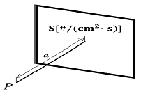
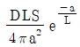
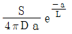
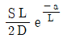
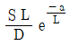
(정답률: 알수없음)
2과목: 핵재료공학 및 핵연료관리
21. 100% 출력으로 운전 중인 원자로가 갑자기 정지되엇을 때, 핵연료의 손상 여부를 확인하는 인자는?
- 붕소농도 변화 값
- 출력분포 측정 값
- 옥소방사능 첨두 값
- 축방향 출력편차 값
(정답률: 알수없음)
22. 가압경수로 노냉각재계통 구조물의 부식 생성물 생성률을 억제하기 위해 노냉각재에 주입하는 첨가제가 아닌 것은?
- H2
- LiOH
- N2H4
- H3BO3
(정답률: 알수없음)
23. 핵연료 제조 공정에 대한 다음 설명 중 옳지 않은 것은?
- 용매추출법, 이온교환법을 이용하여 우라늄 용해액 내의 우라늄을 추출한다.
- 우라늄 정광(Yellow Cake)을 정제하는 건식법으로 ADU법, AUC법 등이 있다.
- 변환(Conversion) 공정에서 생산된 육불화우라늄(UF6)은 우라늄 농축에 사용한다.
- 재변환(Re-Conversion)은 가압중수로 연료제조에는 필요하지 않은 공정이다.
(정답률: 알수없음)
24. 국내 운영 중인 가압경수로 핵연료집합체에 관한 설명 중 옳지 않은 것은?
- 핵연료봉은 8~13단의 지지격자에 형성된 스프링의 힘으로 지지된다.
- 최상단과 최하단의 지지격자에만 냉각재 유동 시 혼합을 돕는 혼합날개가 있다.
- 상하단 고정체와 지지격자에 접합된 안내관이 핵연료집합체의 골격을 구성한다.
- 상하단 고정체와 연료봉 사이에 틈을 두어 조사성장, 열팽창을 수용하게 된다.
(정답률: 알수없음)
25. 방사성 붕괴계열 중 토륨계열은
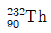
에서 안정한 최종 핵종인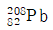
로 될 때까지 발생한 알파붕괴와 베타붕괴 횟수는?- 6, 4
- 7, 4
- 8, 4
- 8, 6
(정답률: 알수없음)
26. 금속우라늄과 이산화우라늄에 대한 설명 중 옳지 않은 것은?
- 금속우라늄은 융점 2,850℃, 밀도 19.⑤g/cm3의 중금속이다.
- 금속우라늄은 미세분말은 대기 중 자연산화 연소하므로 기름 속에 보관한다.
- 이산화우라늄은 형석형 입방정이며 밀도는 10.96g/cm3이다.
- 이산화우라늄은 실온에서 깨지기 쉽고 파괴강도는 기공도와 결정립이 적을수록 크다.
(정답률: 알수없음)
27. 국내 경수로 원전의 소내 사용 후 핵연료 저장조에 대한 유효 증배게수 제한치는?
- 0.90미만
- 0.95미만
- 0.98미만
- 1.00미만
(정답률: 알수없음)
28. 가압경수로형 원전의 핵연료 소결체 제작공정과 출력운전 중 1차 냉각재의 화학적인 조건을 각각 나열한 것은?
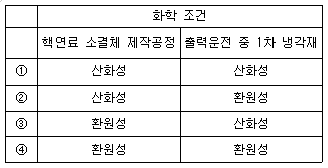
- ①
- ②
- ③
- ④
(정답률: 알수없음)
29. 원자력발전소 정상운전 중 핵연료 펠렛-피복재 상호작용(PCI)에 의한 핵연료 손상을 억제하는 방안 중 옳지 않은 것은?
- 피복재 내부 도포
- 출력 상승률 제한
- 선출력 밀도 증가
- 펠렛밀도 개선
(정답률: 알수없음)
30. 가압경수로 사용 후 핵연료를 화학적으로 재처리하여 플루토늄(Pu)과 우라늄(U)으로 분류 후 혼합하여 제작한 개량형 연료는?
- CANFLEX 연료
- DUPIC 연료
- TANDEM 연료
- MOX 연료
(정답률: 알수없음)
31. 가압경수로형 원전 수화학 관리기술 중 전휘발성처리(All Volatile Treatment : AVT)에 관한 설명으로 옳지 않은 것은?
- 수산화리튬(LiOH)으로 pH를 조절한다.
- 2차 계통 수화학 관리기술이다.
- 하이드라진으로 용존산소를 제거한다.
- 계통에 첨가하는 화합물이 모두 휘발성 물질이다.
(정답률: 알수없음)
32. 붕소중성자포획치료(Boron Neutron Capture Therapy : BNCT)를 이용한 암환자 치료에 관한 설명으로 옳지 않은 것은?
- 환자의 체내에 10B을 주입한다.
- 암세포에 중성자를 조사한다.
- 고에너지 7Be이 생성된다.
- 고에너지 알파입자가 생성된다.
(정답률: 알수없음)
33. 어던 방사성 핵종 105Bq이 용존 상태로 존재하는 액체폐기물 1리터를 새 이온교환수지 10g이 장착된 탈염기로 처리하였다. 처리 후 이온교환수지의 총 방사능이 6×104Bq일 때, 해당 탈염기의 제염계수는 얼마인가? (단, 처리과정에서 액체폐기물의 부피는 변하지 않는다고 가정한다.)
- 0.4
- 1.7
- 2.5
- 4.0
(정답률: 알수없음)
34. 안정한 표적 물질 A에 중성자를 조사하면, 방사화반응을 통하여 반감기가 5분인 방사성 핵종 B가 생성된다. 표적물질 A에 중성자를 10분 동안 조사하고 이어서 10분 동안 방치한 후 계측했더니 방사성 핵종 B의 방사능이 3MBq로 나타났다. 같은 질량의 새로운 표적물질 A에 중성자를 연속해서 20분 동안 조사한 직후 방사성 핵종 B의 방사능은 얼마인가?
- 12MBq
- 15MBq
- 16MBq
- 20MBq
(정답률: 알수없음)
35. 사용 후 핵연료 저장시설의 핵임계 안전성 평가에 관한 설명으로 옳지 않은 것은?
- 사용후핵연료를 신연료로 가정하는 것이 보수적이다.
- 연소도이득을 적용하면, 저장할 수 있는 범위가 늘어날 수 있다.
- 연소도이득에서는 핵분열 생성물을 고려할 수 있다.
- 연소도이득에서는 방사화생성물을 고려할 수 있다.
(정답률: 알수없음)
36. 가압경수로형 원전에서 주로 사용되는 핵연료 피복관 재료에 관한 설명으로 옳지 않은 것은?
- 지르코늄(Zr)에서 하프늄(Hf)을 제거한 후 피복관 재료로 사용한다.
- 지르코늄(Zr)은 하프늄(Hf)보다 열중성자 흡수단면적이 크다.
- Zircaloy-4는 Zircaloy-2보다 수소흡수현상이 적다.
- 수소흡수는 피복관의 연성을 감소시킨다.
(정답률: 알수없음)
37. 다음 중 자기장을 이용하여 우라늄 동위원소를 농축하는 공정은?
- 기체확산법
- 원심분리법
- 레이저농축법
- 이온교환법
(정답률: 알수없음)
38. 지하매질 내에서 방사성 핵종의 지연계수에 대한 설명으로 옳지 않은 것은?
- 지연계수는 1보다 작거나 같다.
- 매질의 밀도가 증가하면 지연계수는 증가한다.
- 매질의 다공도가 증가하면 지연계수는 감소한다.
- 매질에서 방사성핵종의 분배계수가 증가하면 지연계수는 증가한다.
(정답률: 알수없음)
39. PUREX 공정의 용매추출과정에 대한 설명으로 옳지 않은 것은?
- 유기용매인 TBP를 이용한 용매추출로 U, Pu를 따로 분리한다.
- Pu는 Pu(III), Pu(IV)으로 산화된다.
- 우라늄은 U(VI)이 U(IV)으로 환원된다.
- 환원제를 첨가하면 U은 유기용매 상에 남고 Pu은 수용액 상으로 추출된다.
(정답률: 알수없음)
40. 가압경수로형 원전 1차 냉각재의 삼중수소 재고량을 저감하기 위한 방법으로 옳지 않은 것은?
- pH조절제로 7Li화합물을 사용한다.
- 핵연료 피폭관의 건전성을 개선한다.
- 제어봉 피폭관의 건전성을 개선한다.
- 10B이 농축된 붕산을 반응도 조절제로 사용한다.
(정답률: 알수없음)
3과목: 발전로계통공학
41. 열유체와 관련된 용어 설명 중 옳지 않은 것은?
- 정상 유동계 : 질량 또는 에너지 변화가 일어나지 않는 계
- 유동에너지 : 계 경계를 통해 유입 또는 유출되는 유체 유동에 의한 에너지
- 등적과정 : 계의 압력이 일정하게 유지되는 조건에서 상태변화가 일어나는 과정
- 단열과정 : 상태의 변화 중 계의 경계를 통해 열전달이 일어나지 않는 과정
(정답률: 알수없음)
42. 다음 그림은 가압경수로형 원자력발전소의 이론적인 T-S선도이다. 다음 T-S선도 각 구간에 해당하는 발전소 기기의 명칭이 옳지 않은 것은?
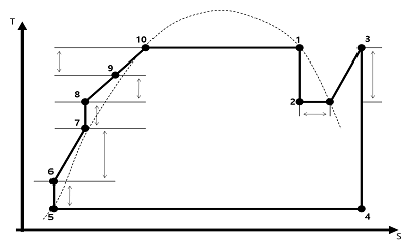
- 1 - 2 : 고압터빈
- 2 – 3 : 저압터빈
- 4 – 5 : 복수기
- 9 – 10 : 증기발생기
(정답률: 알수없음)
43. 점성유체의 층류와 난류를 구분하기 위한 레이놀드 수는 아래와 같다. 비중 0.9, 동점성계수 5.45×10-5m2/s의 유체가 지름 15cm인 원형 배관 속을 0.6m/s로 흐르고 있을 때, 이 유체흐름의 특성은?
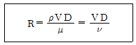
- 층류
- 난류
- 난류와 층류의 혼합(천이)
- 와류
(정답률: 알수없음)
44. 원자로 용기의 기능으로 옳지 않은 것은?
- 물리적 방벽 기능 제공
- 핵연료와 원자로 내장품 지지 및 보호
- 원자로 냉각재 유로 형성 및 하중 흡수
- 노외핵계측 장비 수용
(정답률: 알수없음)
45. 증기발생기 수위팽창(Swelling) 현상이 일어날 수 있는 경우가 아닌 것은?
- 주증기 격리밸브 닫힘
- 터빈출력의 급격한 증가
- 주급수격리밸브 닫힘
- 증기덤프밸브 개방
(정답률: 알수없음)
46. 직경이 8.6mm인 어떤 핵연료봉의 표면온도가 349℃, 냉각재 온도는 299℃이다. 이 때, 핵연료봉의 선형출력(kW/m)은? (단, 대류열전달계수 hc는 21,850W/m2℃로 계산하시오.)
- 28.0
- 28.5
- 29.0
- 29.5
(정답률: 알수없음)
47. 원자로냉각재계통 운전변수와 핵비등이탈율(DNBR)과의 관계에 대한 설명 중 옳지 않은 것은?
- 반경방향 첨두계수 증가 시 핵비등이탈율이 증가한다.
- 원자로냉각재계통 온도 증가 시 핵비등이탈율이 감소한다.
- 원자로냉각재계통 유량 증가 시 핵비등이탈율이 증가한다.
- 가압기 압력이 감소 시 핵비등이탈율이 감소한다.
(정답률: 알수없음)
48. 원자로용기에 가압열충격(PTS)을 유발할 수 있는 경우가 아닌 것은?
- 안전주입계통 동작
- 증기발생기 튜브 파열사고
- 격납건물살수계통 동작
- 주증기계통 안전밸브 개방 고착
(정답률: 알수없음)
49. 노심상부 출력이 0.52이고, 노심하부 출력이 0.48일 경우, 이 노심의 축방향출력편차(ASI : Axial Shape Index)는?
- -0.04
- -0.02
- 0.02
- 0.04
(정답률: 알수없음)
50. 발전소보호계통(Plant Protection System)의 구성계통이 아닌 것은?
- 원자로보호계통
- 터빈보호계통
- 공학적안전설비계통
- 다양성보호계통
(정답률: 알수없음)
51. 가압경수로형 발전소의 원자로냉각재계통 누설에 대한 설명 중 옳지 않은 것은?
- 확인누설 : 격납건물 대기로의 누설로 누설탐지계통의 운전을 방해하지 않고 압력경계누설이 아닌 것
- 미확인 누설 : 확인누설과 압력경계누설을 제외한 누설
- 증기발생기 튜브를 통한 누설 : 어느 한 증기발생기의 1차측에서 2차측으로의 누설
- 압력경계누설 : 원자로 냉각재계통의 기기 몸체, 배관 벽, 용기 벽의 누설로 차단할 수 없는 누설
(정답률: 알수없음)
52. 다음 그림과 같은 원형 노즐에서 출구속도와 출구 유량으로 바른 것은? (단, 중력가속도는 9.8m/s2, 물의 밀도는 1,000kg/m3, 원주율은 3.14로 계산하되, 출구속도와 출구유량은 각각 소수점 셋째 자리에서 반올림하여 계산하시오.)
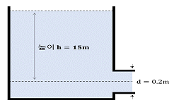
- 12.12m/s, 380.57kg/s
- 12.12m/s, 538.51kg/s
- 17.15m/s, 380.57kg/s
- 17.15m/s, 538.51kg/s
(정답률: 알수없음)
53. 가압경수로형 원자력발전소의 가압기 기능으로 옳지 않은 것은?
- 원자로냉각재계통 압력제어 수단 제공
- 원자로냉각재계통 압력이 설계치 미만으로 감소하는 것을 방지
- 원자로냉각재계통 체적변화 수용
- 출력운전 중 원자로냉각재 과냉각 상태유지를 위한 압력형성
(정답률: 알수없음)
54. 화학 및 체적제어계통(CVCS)의 기능이 아닌 것은?
- 출력운전 중 정지냉각계통의 일부 유량을 유출관 여과기와 이온교환기를 통과시켜 정화한다.
- 원자로 냉각재 펌프 사용 불능으로 가압기 정상살수가 안되면, 충전유량 일부를 가압기 살수관으로 공급하여 보조살수로 사용할 수 있다.
- 충전유량 중 일부를 원자로냉각재펌프 밀봉부로 공급하고, 밀봉부 유출 유량을 체적제어탱크로 회수한다.
- 충전펌프로 원자로냉각재계통을 설계 압력까지 가압하여 원자로냉각재계통 누설시험 수단을 제공한다.
(정답률: 알수없음)
55. ANSI N18.2(1973)에서 분류한 발전소 설계 시 고려하는 사건 분류(Condition I ~ IV)를 따를 때, Condition II(비교적 자주 발생하는 경미한 사고)에 해당하지 않는 사건은?
- 제어불능의 붕소희석사고
- 외부 부하상실 혹은 터빈 정지
- 원자로냉각재펌프 1대의 회전차 고착
- 원자로냉각재계통의 우발적 감압
(정답률: 알수없음)
56. 한국표준형 원자력발전소에서 정지냉각계통의 입구에 설치된 저온과압보호(LTOP : Low Temperature Overpressure Protection)설비의 기능을 올바로 설명한 것은?
- 정지냉각계통 압력이 가압기 압력 이상으로 높아짐을 방지하여 계통 압력이 설계압력 이상으로 높아짐을 방지
- 가압기 만수위 상태에서 원자로냉각재계통의 압력과도현상에 대한 과압보호
- 원자로 냉각재 압력에 노출되는 배관의 길이 및 체적의 최소화
- 정지냉각운전 시작 시 발생 가능한 붕산희석 가능성 최소화
(정답률: 알수없음)
57. 열출력이 2,775MWth인 원자력발전소가 있다. 복수기로의 에너지 방출률이 6.54×1012J/hr일 때, 이 발전소의 효율은 얼마인가?
- 31.5%
- 32.5%
- 33.5%
- 34.5%
(정답률: 알수없음)
58. 가압경수로에 설치된 비상노심냉각계통(ECCS) 또는 안전주입계통의 기능으로 옳지 않은 것은?
- LOCA 발생 시 RCS에 노심냉각을 위한 붕산수 공급
- LOCA 후 장기노심냉각수단 제공
- LOCA 발생 시 격납건물 내 과압 방지를 통한 건전성 유지
- 주증기관 파단에 의한 RCS 과냉 발생 시 붕산수 공급으로 충분한 정지 여유도 확보
(정답률: 알수없음)
59. 노심보호연산기(CPC)에서는 노심 및 원자로에서 누설되는 중성자를 측정하여 원자로 출력을 측정하는 노외핵계측기의 측정 부정확성으로 인하여 이를 보정한 값을 사용하고 있다. 노외핵계측기의 부정확성을 보장하기 위한 인자가 아닌 것은?
- 제어봉 집합체 그림자 계수
- 형상 처리 행렬
- 온도 그림자 계수
- 기포 계수
(정답률: 알수없음)
60. 원자로냉각재계통의 유동정체(Flow Stagnation)를 유발할 수 있는 경우가 아닌 것은?
- 낮은 열생성
- 원자로냉각재 재고량 상실
- 원자로냉각재계통의 압력 감소
- 열제거원의 심각한 불평형(비대칭)
(정답률: 알수없음)
4과목: 원자로 안전과 운전
61. 가압경수로형 원자력발전소에서 제어봉을 삽입하거나 인출할 때, 제어봉군(Control Bank) 간에 중첩(Overlap)시키도록 되어 있는데, 그 이유로 옳지 않은 것은?
- 균일한 제어봉 제어값 유지
- 평탄한 축방향 중성자속 분포 유지
- HCF(Hot channel Factor)를 제한치 이내로 유지
- 제어봉 이탈사고 시 부(-)반응도 삽입 제한
(정답률: 알수없음)
62. 원자력발전소의 반응도 제어게통에 관한 기술 기준으로 옳지 않은 것은?
- 제어봉에 의한 제어계통, 액체제어제 주입 또는 1차 냉각재의 유량조정 등에 의해 반응도를 제어할 수 있다.
- 서로 다른 설계원리를 가진 2개의 독립적인 반응도 제어계통이 제공되어야 하고, 그 중 하나는 액체제어제를 사용해야 한다.
- 서로 다른 설계원리를 가진 두 개의 독립적인 반응도 제어계통 중 하나는 정상운전의 원자로를 저온조건 하에서 미임계 상태로 유지할 수 있어야 한다.
- 제어봉에 의한 제어계통은 운전 중에 어떠한 하나의 제어봉이 고착된 경우에도 반응도를 제어할 수 있다.
(정답률: 알수없음)
63. 원자력발전소에서 원자로 보호계통의 신뢰성을 향상하기 위한 아래 설명에 해당하는 설계기준으로 맞는 것은?
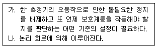
- 다중성
- 독립성
- 다양성
- 동시성
(정답률: 알수없음)
64. 가압경수로형 원자로의 축방향 중성자속 분포에 영향을 주는 주요 인자가 아닌 것은?
- 제어봉 삽입 위치
- Xe 진동
- 원자로 냉각재 내 붕소농도
- 연료 연소(Burn–Up)
(정답률: 알수없음)
65. 원자로냉각재계통의 과냉각여유도(Subcooling Margine)를 감시하는데 사용되는 변수가 아닌 것은?
- 원자로 노외핵계측기 출력
- 원자로 냉각재 고온관 온도
- 노심출구 열전대 온도
- Sm의 증가
(정답률: 알수없음)
66. 원자력발전소 기동 시 전출력 도달 후 약 40~50시간 동안 노심의 반응도가 급격히 감소하는 가장 큰 이유는 무엇인가?
- 핵연료 연소의 증가
- 냉각재의 온도변화
- Xe의 증가
- Sm의 증가
(정답률: 알수없음)
67. 원자력발전소의 심층방어에서 효과적인 이행을 위한 전제조건으로 옳지 않은 것은?
- 보수적 가정 및 접근
- 결정론적 안전성 평가
- 품질보증
- 안전문화
(정답률: 알수없음)
68. 가압경수로형 원전에서 출력운전 중 원자로가 긴급정지되었다. 다음 중 원자로 정지를 확인하기 위한 방법이 아닌 것은?
- 모든 제어봉 삽입 확인
- 원자로 정지 차단기 개방 확인
- 터빈정지밸브 닫힘 확인
- 출력영역 중성자속 준위 급속 감소 확인
(정답률: 알수없음)
69. 어떤 원자로 노심에서 핵비등이탈율(DNBR)dl 1.4에서 1.6으로 증가할 경우에 대한 설명으로 옳지 않은 것은?
- 열전달계수는 감소한다.
- 핵비등(Nucleate Boiling)이 감소한다.
- 피복재 온도에 관해서는 안전하다.
- 막비등(Film Boiling)이 발생한다.
(정답률: 알수없음)
70. 발전소 최대 가상사고 시 원자로를 보호하고 방사능으로부터 종사자 및 공중보호를 우한 공학적 안전설비의 기능으로 옳지 않은 것은?
- 사고 시 에너지 방출 최대화로 사고 완화
- 비상노심냉각으로 핵연료 피복재 보호
- 극심한 냉각재 유출 사고 시 핵분열 생성물 제거
- 격납건물 차단 및 냉각으로 격납건물 건전성 유지
(정답률: 알수없음)
71. 출력이 2배로 증가하는데 28초 걸리는 원자로가 있다. 기동률(Start up)으로 맞는 것은?
- 0.32dpm
- 0.64dpm
- 0.72dpm
- 0.84dpm
(정답률: 알수없음)
72. 원자로를 70% 출력으로 운전하다가 붕소희석으로 100% 출력으로 증가하려고 한다. 100% 출력 도달 시 붕소농도로 맞는 것은? (단, 제어봉은 현위치를 유지하며 Xe의 조건은 무시한다. )
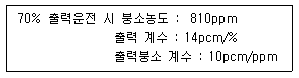
- 768ppm
- 789ppm
- 831ppm
- 852ppm
(정답률: 알수없음)
73. 가압경수로형 원자력발전소에서 출력운전 중 정지여유도(Shutdown Margine)의 감소 요인이 아닌 것은?
- 원자로 냉각
- 제어봉 인출
- 붕소희석
- 제논(Xe) 붕괴
(정답률: 알수없음)
74. 가압경수로형 원자력발전소 원자로의 반응도 조절에 사용하는 화학적 제어제(Chemical Shim)의 장점에 대한 설명으로 옳지 않은 것은?
- 신속한 반응도 제어로 부하추종 운전에 용이하다.
- Xe, Sm등의 독물질에따른 반응도를 보상할 수 있다.
- 원자로 정지 시 충분한 정지여유도를 확보할 수 있다.
- 정상운전 중 출력 변화에 관계없이 제어봉을 비교적 높게 적절한 위치로 유지하면서 중성자 속 분포를 고르게 유지할 수 있다.
(정답률: 알수없음)
75. 원자로냉각재상실사고(LOCA) 시 증기발생기 U-튜브 상단에 불응축성 가스가 집적되면 자연순환 냉각을 방해하여 노심의 안전성을 저해하게 된다. 다음 중 발생 가능한 불응축성 가스의 생성원이 아닌 것은?
- 냉각재 내 용존수소의 방출
- 물의 방사선 분해에 의한 수소의 발생
- 핵연료 피복재 손상 시 헬륨 및 핵분열 기체
- 화학 및 체적제어탱크(VCT)의 수소가스 방출
(정답률: 알수없음)
76. 경수로형 원자력발전소 설계기준사고 중 저출력 운전상태에서 노심에 더욱 심각한 손상을 줄 우려가 있는 사고는?
- 원자로냉각재배관 파열사고
- 주증기관 파열사고
- 증기발생기 전열관 파열사고
- 가압기 안전밸브 개방사고
(정답률: 알수없음)
77. 전원상실에 의하여 원자로 냉각재펌프가 정지되면 자연순환에 의하여 노심을 냉각해야 하는데, 자연순환을 유지하기 위한 조건으로 옳지 않은 것은?
- 가압기 수위 유지
- 가압기 압력 유지
- 주증기관 격리 및 대기덤프 닫힌 상태 유지
- 증기발생기 수위 유지
(정답률: 알수없음)
78. 원자로 냉각재상실사고(LOCA) 시, 일정 시간 경과 후 고온관 및 저온관에 안전주입을 동시에 수행하는 이유는 무엇인가?
- 노심에서 방출되는 증기의 부유 운반 정지
- 원자로 노심에서의 우회 가능성 차단
- 노심상부 붕산 침적 발생 가능성 방지
- 고온관 주입에 의한 붕괴열 감소 가속화
(정답률: 알수없음)
79. 아래에서 설명하고 있는 발전소 과도상태로 맞는 것은?
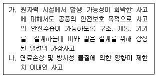
- 예상운전 과도상태
- 설계기준사고
- 설계기준 초과 사고
- 중대사고
(정답률: 알수없음)
80. 중대사고 정책에 대한 기관별 정책 이행사항으로 원자력 사업자가 이행해야 할 사항이 아닌 것은?
- PSA 세부 이행계획 수립 및 이행
- 중대사고 대처능력 확보
- 중대사고 관리전략, 조직, 지침서 등을 포함한 사고관리계획 수립 및 이행
- 중대사고 정책 이행에 필요한 세부 지침서 개발
(정답률: 알수없음)
5과목: 방사선이용 및 보건물리
81. 다음에 대한 설명으로 옳지 않은 것은?
- 의료상 피폭은 선량한도가 적용되지 않는다.
- 일반인과 작업자 선량한도에 차이가 있는 이유 중 하나는 위험의 수용준위가 다르기 때문이다.
- 규제배제는 정상 또는 이상 상황에서 행위로 인한 위험 즉, 선량이 지극히 사소한 경우에 해당된다.
- 규제해제는 규제대상이던 선원 또는 행위를 규제 대상에서 제외하는 것을 의미한다.
(정답률: 알수없음)
82. 다음에 대한 설명으로 옳지 않은 것은?
- 피부 홍반 발생 문턱선량은 대략 5Gy로 알려졌다.
- 방사선 감수성은 인간의 경우 연령이 증가할수록 감소한다.
- 결정적 영향의 증상 심각도는 선량에 비례한다.
- 확률적 영향 발생기전은 세포 돌연변이와 유전의 결과로 발생 가능한 영향이다.
(정답률: 알수없음)
83. 다음에 대한 설명으로 옳지 않은 것은?
- 태아의 지능저하는 1Sv 당 IQ 30점 정도로 알려졌고, 확률적 영향의 특성을 갖고 있다.
- 태아의 기형유발 발단선량은 약 0.1Gy로 알려졌다.
- 자연적 돌연변이 발생과 동일한 유발율을 나타내는 선량을 배가선량이라고 한다.
- 방사선장해 중 임신 8~25주 기간에는 태아의 지능 저하가 나타날 수 있다.
(정답률: 알수없음)
84. 비례계수관에 대한 설명으로 옳지 않은 것은?
- 알파선 측정 펄스가 베타선 측정 펄스에 비해 대부분 크다.
- 저전압 영역 Plateau는 알파선과 베타선에 기인한 것이다.
- 비례계수관은 에너지분해능이 있다.
- 기체유입형에는 P-10(아르곤 90% + 메탄 10% )가스가 많이 사용된다.
(정답률: 알수없음)
85. 다음에 대한 설명으로 옳지 않은 것은?
- 중성자 피폭선량 생체시료분석법을 이용하고자 할 때, 측정대상이 되는 가장 중요한 해고종 중 하나는 이다.
- 흡수선량과 커마의 단위는 동일하다.
- LET(선형에너지전달)와 저지능의 단위는 동일하다.
- 내부 피폭선량 선량예탁을 평가 시 성인은 50년 아동은 70년을 고려한다.
(정답률: 알수없음)
86. 기존피폭(Existing Expousure)에 대한 참조준위(Reference Level)은?
- 1 ~ 10mSv
- 1 ~ 20mSv
- 20 ~ 50 mSv
- 20 ~ 100 mSv
(정답률: 알수없음)
87. 다음 핵종을 내장하고 있는 밀봉선원 중 제동복사선 차폐에 가장 많은 주의가 요구되는 핵종은?
- 35S
- 63Ni
- 90Sr
- 147Pm
(정답률: 알수없음)
88. 방사선작업종사자가 실수로 어떤 핵종을 3×105Bq 섭취하고, 이 방사성 핵종에 공기가 500Bq/m3으로 오염된 방사선작업구역에서 400시간 근무하였다. 이 종사자의 유효선량은? (단, 상기 핵종의 연간섭취한도(ALL)는 6×105Bq, 연간 작업시간은 2,000시간, 호흡률은 1.2m3/h으로 가정한다.)
- 8 mSv
- 10 mSv
- 14 mSv
- 18 mSv
(정답률: 알수없음)
89. 다음 중 괄호 안에 알맞은 것은?
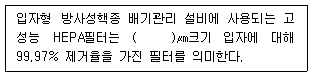
- 0.1
- 0.3
- 0.5
- 0.7
(정답률: 알수없음)
90. 다음 중 베타선이 물질 중에서 에너지 손실에 가장 크게 기여하는 핵종은?
- 원자핵과의 탄성산란
- 원자핵과의 비탄성산란
- 궤도전자와의 탄성충돌
- 궤도전자와의 비탄성충돌
(정답률: 알수없음)
91. 다음 중 중성자와 물질과의 상호반응에 대한 설명으로 옳지 않은 것은?
- 비탄성 산란에서는 중성자와 원자핵이 충돌하여 산란할 때, 중성자의 에너지 일부가 원자핵을 여기시키는데 사용되고, 여기된 원자핵은 비탄성감마선을 방출한다.
- 방사 포획 반응에서는 원자핵이 중성자를 포획해 하나 또는 몇 개의 감마선을 방출하는데, 이 때 발생하는 감마선을 포획 방사선이라 한다.
- 중성자는 흡수반응의 결과로 양성자나 알파입자 등의 하전입자를 방출할 수 있는데, 이 때, 이러한 반응은 발열반응일 수도 있고, 흡열반응일 수도 있다.
- 중성자와 원자핵이 충돌할 경우 때때로 (n, 2n)과 (n, 3n)반응이 일어날 수 있으며, 이 때 이러한 반응은 발열반응이다.
(정답률: 알수없음)
92. 다음 설명 중 옳은 것은?
- 1MeV의 광자가 물 팬텀에 입사한 경우의 표면선량은 커마보다 흡수선량이 크다.
- 동일한 방사선에 대하여 물질의 반가층이 클수록 차폐의 공간적인 측면에서 더 유리하다.
- 2가지 종류의 차폐체로 감마선을 차폐할 경우, 비충돌선속의 지수감쇠는 차폐체 순서와 무관하다.
- 반도체 검출기의 경우, 저에너지 감마선 영역에서는 사층(Dead Layer)으로 인해 게측효율이 높아진다.
(정답률: 알수없음)
93. 기체유입형 비례계수관을 이용하여 알파선과 베타선을 측정할 때, 다음 설명 중 옳은 것은?
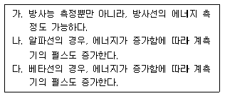
- 가, 나
- 가, 다
- 나, 다
- 가, 나, 다
(정답률: 알수없음)
94. 1MeV의 감마선이 섬광체에 모든 에너지를 전달하고 평균 450nm의 파장을 가진 20,000개의 섬광광자를 생성하였을 경우, 섬광체의 섬광효율은? (단, 플랑크 상수 h=606×10-34Jㆍsec, 광속 c=3×108m/s, 1eV=1.6×10-19J이다.)
- 2.0 %
- 5.5 %
- 7.0 %
- 9.5 %
(정답률: 알수없음)
95. 3He(n,p)3H는 속중성자 측정에 사용되는 중요한 핵반응 중 하나이다. 2MeV의 속중성자가 3He 비례계수관에 입사했을 때, 생성되는 출력 펄스 신호를 아래와 같은 그림에 나타내었다. 지점에 해당하는 에너지를 옳게 나타낸 것은? (단, 상기 핵반응의 Q값은 0.76MeV이다. )
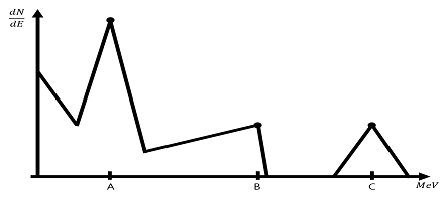
- 0.764MeV
- 1.5MeV
- 2MeV
- 2.764MeV
(정답률: 알수없음)
96. 다음 중 천연방사성핵종에 대한 설명으로 옳지 않은 것은?
- 3H, 14C는 우주선 작용으로 생성된다.
- 232Th, 235U, 238U 등은 붕괴계열에 따라 붕괴한다.
- 질량수가 4n+3 인 계열은 자연계에 존재하지 않는다.
- 40K, 87Rb는 방사성 붕괴계열을 만들지 않는다.
(정답률: 알수없음)
97. 2.3MeV 단일 에너지 감마선이 매우 작은 크기의 반도체검출기(HPGe)에 입사 시 다중채널분석기(MCA)에서 관찰이 가장 용이하지 않은 피크는?
- 광전자피크
- 컴프턴산란
- 이중이탈피크
- 단일이탈피크
(정답률: 알수없음)
98. 다음 중 측정에 적합한 방사선측정기로 올바르게 짝지어진 것은?
- NaI(Tl) - HPGe
- Znsi(Ag) - CR39
- HPGe - Hgl2
- CdTe - LR115
(정답률: 알수없음)
99. 흡수선량이 같은 체내피폭의 경우 등가선량이 가장 큰 핵종은?
- 85Kr
- 90Sr
- 131I
- 210Po
(정답률: 알수없음)
100. 제염계수가 가장 큰 10인 액체폐기물 배수 관리 설비가 직렬로 연결되어 있을 때, 전체 설비의 방사성폐기물 제거효율은 얼마인가?
- 90%
- 95%
- 99%
- 99.9%
(정답률: 알수없음)